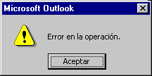

- Category: Integration - Defect
- (downgraded from Fatal Error - Critical on 2002-06-14)
Incident ID: X020501 Priority: 6 - Important Status: Workaround Development Component: ODMA32.dll2.0.0 interacting with Microsoft Outlook 2002
- Repaired in: tbd
Related information:- Q000606: Troubleshooting Microsoft Word ODMA Integrations
Q000602: Where Is Support Information for Microsoft Office?
Q000001: Configuring MS Office for ODMA
Q000600: section on Configuring WordPerfect for ODMA (sketches disabling ODMA-awareness of an application)Assigned To: Dennis E. Hamilton
- Reported By:
- Maria Gabriela Serkin (2002-05-07)
Date Logged: 2002-05-20
Date Recorded: 2002-05-20Date Closed: none
Content
Contributors
Microsoft Outlook 2002 operates as if it is ODMA-aware when it isn't intended to be.
When ODMA is installed and a default DMS is established, the Outlook 2002 File / Save ... operation with an open Outlook document or message will initiate ODMA requests for saving a new document in the default ODMA DMS.
However, the required sequence of operations is not completed. Instead, Outlook (here configured for Spanish operation) fails with an error message:

Following this error, it may be necessary to close and re-open Outlook 2002 to restore operation.
The ODMA user contacted Microsoft and learned that Outlook 2002 is not intended to be ODMA-aware. The initiation of ODMA operation is an error in the operation of Outlook 2002. A patch was provided. Successful operation with the patch has not been confirmed.
When the resolution is complete, appropriate information will be added for others who may encounter this, and this incident will be closed and carried as inactive.
If, when attempting to Save As ... in Outlook 2002, any dialogs from a DMS are presented, you should decline them.
- If a DMS log-on occurs, cancel it (or log on and decline in the next step).
- If a DMS-related Save dialog is presented, select the option to use the file system instead. Outlook 2002 will then continue with its normal file-based dialogs.
- This will not prevent recurrences of the log-on and save dialogs. However, if Save As ... is an uncommon operation in Outlook 2002, this may be sufficient for you. If not, one of the other remedies in Section 2 will be needed.
The problem and the workaround has been confirmed with the following configurations:
| Outlook 2002 (10.2627.2625) on Windows NT 4.00.1381 | ODMA 2.0.0-1 ODMA32.dll Connection Manager | IBM Content Manager Client
version 7.1 with Content Manager Aix Server 7.1
|
| Outlook 2002 SP1 on Windows 2000 |
Outlook 2002 is not intended to be an ODMA-aware application. If this incident occurs,
1. Apply the workaround (section 1.2) until you can introduce an automatic solution.
3. Contact Microsoft and obtain the patch for disabling the erroneous access to ODMA.
3. Adjust your registry to disable the availability of a default ODMA DMS to Outlook. This will cause the Outlook 2002 registration with ODMA to fail. Outlook should proceed normally as a non-ODMA-aware application. [More information on how to do this will be provided. Meanwhile, there is a sketch in the FAQ Q000600 section on Configuring WordPerfect for ODMA.]
The following actions are complete:
- Capture of logs
- Analysis of logs and request of variations to isolate the underlying cause
- Establishment of an incident report with Microsoft by the user
- Identification of workarounds for interrupting any Outlook 2002 accidental initiation of ODMA-aware behavior
The following actions are to be carried out before this incident is closed:
- Complete the documentation of logs and screen shots for support of trouble-shooting and analysis of related problems as well as for supporting people who want to confirm this or similar incidents in use of Microsoft Office XP Applications.
- Update the relate FAQ files to be more useful in future troubleshooting and workarounds for situations where an application needs to be isolated from operating with ODMA.
- Create a feature request for greater control of troubleshooting setup (e.g., ODMA logging) and application isolation by users who are using ODMA integrations.
- Close this incident report and leave it in existence for reference in those cases where others report what appears to be the same incident to ODMA Tech.
see also: X020501e: Outlook Save-Document Analysis
- An ODMA log has been obtained of the Outlook 2002 requests to ODMA. There is no indication of a failure in any of the ODMA operations. The incomplete document-creation sequence is proceeding correctly. It appears that Outlook 2002 simply fails.
- Additional log cases and screen captures were obtained.
- It was confirmed that a proper pcbCallBack procedure is supplied by Outlook 2002 and it appears to operate properly as part of the requested Save operation. The DMS-provided "Options" button will properly present and exercise the options provided in the callback from Outlook 2002.
- It was also confirmed that the DMS-provided "File System ..." button can be used to end the attempted use of ODMA operations and have Outlook 2002 revert to use of the standard file-system dialogs for carrying out the Save As ... request.
- Exploring the possible differences with substitute DMS integrations is abandoned since the presence of ODMA-aware functionality in Outlook 2002 is now understood to be an accident.
[A simple repeatable case that can be used to demonstrate the failure, if available]
- Maria Gabriela Serkin
- confirmed that Outlook 2002 is ODMA-aware and tested saving of e-mail messages into a DMS, providing the key information and a log file for incident X020501.
- Dennis Hamilton
- reviewed the reports and logs, creating this incident report.
created 2002-05-20-18:12 -0600 (pdt) by orcmid
$$Author: Orcmid $
$$Date: 07-07-28 11:15 $
$$Revision: 12 $